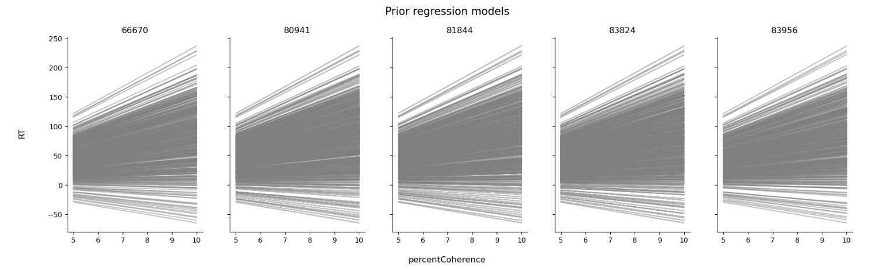
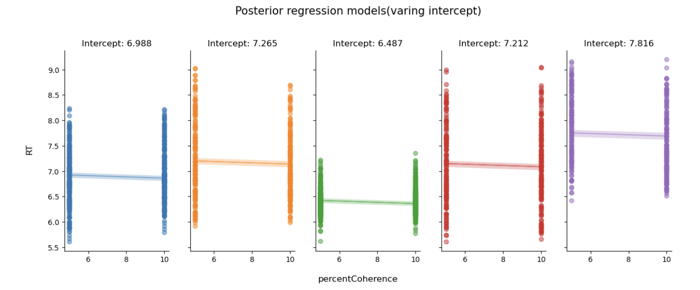
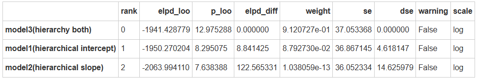

练习#
本次练习以随机点运动范式的数据为例，并引入包含自变量时的分层模型，通过不同的模型验证不同的假设：
H0(model 0)，普通线性模型，仅考虑被试的反应时间。
H1(model 1)，变化截距模型，在模型0的基础上考虑点运动方向的一致性在不同被试上的变化。
H2(model 2)，变化斜率模型，在模型0的基础上不同被试间的反应时间的变化。
H3(model 3)，变化截距和斜率模型，结合模型1和模型2，同时考虑被试的反应时间和点运动方向的一致性之间的变化。
注意，本次练习仅考虑部分池化模型的3种不同情况（即练习 model 1、model 2、model 3）。
# 导入 pymc 模型包，和 arviz 等分析工具
import pymc as pm
import arviz as az
import seaborn as sns
import scipy.stats as st
import numpy as np
import matplotlib.pyplot as plt
import xarray as xr
import pandas as pd
import ipywidgets
import bambi as bmb
# 忽略不必要的警告
import warnings
warnings.filterwarnings("ignore")
# 使用 pandas 导入示例数据
try:
df_raw = pd.read_csv("/home/mw/input/bayes3797/evans2020JExpPsycholLearn_exp1_full_data.csv")
except:
df_raw = pd.read_csv('data/evans2020JExpPsycholLearn_exp1_full_data.csv')
df_raw[["subject","RT"]]
由于被试数量较多，依旧使用其中5个被试的数据作为练习。
# 筛选出特定被试并创建索引
df_first5 = df_raw[df_raw['subject'].isin([81844, 83956, 83824, 66670, 80941])].query("percentCoherence in [5, 10]").copy()
# 为每个被试建立索引 'subj_id' 和 'obs_id'
df_first5['subj_id'] = df_first5['subject']
df_first5['obs_id'] = df_first5.groupby('subject').cumcount() + 1
# 对反应时间取对数
df_first5["log_RTs"] = np.log(df_first5["RT"])
# 为每一行生成全局唯一编号 'global_id'
df_first5['global_id'] = range(len(df_first5))
df_first5.head()
和上节课一样，需要通过链接函数（link function）来将反应时数据转换为正态分布。
公式为：
其中，\(\eta\)是反应时的对数，\(\mu和\sigma\)是正态分布的均值和标准差。
注意，由于RT经过对数变化后其范围缩小，因此对先验进行设置时需要对\(\mu和\sigma\)进行缩放，以保持反应时数据的范围。
从上图中可以看出，反应时数据经过对数转换后的范围为 [5,10]。
因此，先验\(\mu\)可以设置为\(\mu\)，先验\(\sigma\)可以设置为：
Model1: Hierarchical model with varying intercepts#
相较于没有自变量的分层模型，构建包含自变量的分层模型的关键在于区分 变量(\(\beta\)) 和 分层(layer) 的关系。
priors
likelihood
Layer 2: Variability between Subject
随机点运动方向的一致性与反应时间之间的线性关系在被试间有什么不同
随机点运动方向的一致性与反应时间之间的线性关系由截距和斜率两方面构成
在不同的被试j之间，其截距是变化的
假设截距的基线(baseline)为\(\beta_0\)，不同被试间的组间差异为\(\sigma_0\),则每个被试的截距可以表示为：
Layer 1: Variability within Subject
随机点运动方向的一致性与反应时间之间的关系在被试内有什么不同
使用i表示第i个试次
对于每一个被试而言，其反应时服从以\(\mu_{ij}\)为均值，\(\sigma_y\)为标准差的正态分布
而\(\mu_{ij}\)由参数\(\beta_{0j},\beta_1\)决定
其中，\(\beta_{0j}\)在组与组之间不同
\(\beta_1和\sigma_y\)则是相同的
Global priors （变化截距和斜率模型）
最后，考虑截距和斜率共同变化的情况，并全局参数进行定义，即\(\beta_0,\beta_1,\sigma_0\)
首先，考虑Model 1模型（变化截距）
##--------------------------------------------------------------------
# 补全下列代码
#----------------------------------------------------------------------
# 建立被试 ID 映射表
subject_mapping = {subj_id: idx for idx, subj_id in enumerate(df_first5["subj_id"].unique())}
# 将被试 ID 转换为索引
mapped_subject_id = df_first5["subj_id"].map(subject_mapping).values
# 定义函数来构建和采样模型
def run_var_inter_model():
#定义数据坐标
coords = {
"subject": df_first5["subj_id"].unique(),
"obs_id": df_first5["global_id"]}
with pm.Model(coords=coords) as var_inter_model:
# 对 RT 进行 log 变换
log_RTs = pm.MutableData("log_RTs", np.log(df_first5['RT']))
#定义全局参数
beta_0 = pm.Normal(, mu=, sigma=)
sigma_beta0 = pm.Exponential()
beta_1 = pm.Normal("beta_1", mu=, sigma=)
sigma_y = pm.Exponential("sigma_y", )
#传入自变量、获得观测值对应的被试映射
x = pm.MutableData()
subject = pm.MutableData()
#模型定义
beta_0j = pm.Normal()
#线性关系
mu = pm.Deterministic()
# 定义 likelihood
likelihood = pm.Normal()
var_inter_trace = pm.sample(draws=1000, # 使用mcmc方法进行采样，draws为采样次数
tune=1000, # tune为调整采样策略的次数，可以决定这些结果是否要被保留
chains=4, # 链数
discard_tuned_samples= True, # tune的结果将在采样结束后被丢弃
random_seed=84735,
target_accept=0.99)
return var_inter_model, var_inter_trace
# 注意，以下代码可能运行5分钟左右
var_inter_model, var_inter_trace = run_var_inter_model()
pm.model_to_graphviz(var_inter_model)
先验预测检查
##--------------------------------------------------------------------
# 补全下列代码
#----------------------------------------------------------------------
var_inter_prior = pm.sample_prior_predictive(samples=500,
model=,
random_seed=84735)
#提取不同站点数据对应的索引并储存，便于后续将后验预测数据按照站点进行提取
def get_group_index(data):
group_index = {}
for i, group in enumerate(data["subj_id"].unique()):
group_index[group] = data.loc[data["subj_id"] == group]["global_id"].values
return group_index
# 定义绘制先验预测回归线的函数，其逻辑与绘制后验预测回归线相同
def plot_prior(prior,group_index):
# 定义画布，根据站点数量定义画布的列数
fig, ax = plt.subplots(1,len(df_first5["subj_id"].unique()),
sharex=True,
sharey=True,
figsize=(20,5))
for i, group in enumerate(df_first5["subj_id"].unique()):
#绘制回归线
ax[i].plot(
prior.constant_data["x"].sel(obs_id= group_index[group]),
prior.prior["mu"].sel(obs_id = group_index[group]).stack(sample=("chain","draw")),
c='gray',
alpha=0.5
)
ax[i].set_title(f"{group}")
fig.text(0.5, 0, 'percentCoherence', ha='center', va='center', fontsize=12)
# 生成纵坐标名称
fig.text(0.08, 0.5, 'RT', ha='center', va='center', rotation='vertical', fontsize=12)
# 生成标题
plt.suptitle("Prior regression models", fontsize=15, y=1)
sns.despine()
##--------------------------------------------------------------------
# 补全下列代码
#----------------------------------------------------------------------
first5_index = get_group_index(data=df_first5)
plot_prior(prior=,
group_index=)

MCMC采样&后验参数估计
##--------------------------------------------------------------------
# 补全下列代码
#----------------------------------------------------------------------
# ~ 和filter_vars="like" 表示在显示结果时去除掉包含这些字符的变量
var_inter_para = az.summary(var_inter_trace,
var_names=[],
filter_vars="like")
var_inter_para
##--------------------------------------------------------------------
# 补全下列代码
#----------------------------------------------------------------------
az.plot_forest(var_inter_trace,
var_names=[],
filter_vars="like",
combined = True)

后验预测回归线
5条回归线的截距不同，斜率相同
#定义函数，绘制不同站点下的后验预测回归线
def plot_partial_regression(data, trace, group_index):
# 定义画布，根据站点数量定义画布的列数
fig, ax = plt.subplots(1,len(data["subj_id"].unique()),
sharex=True,
sharey=True,
figsize=(15,5))
# 根据站点数来分别绘图
# 我们需要的数据有原始数据，每一个因变量的后验预测均值
# 这些数据都储存在后验参数采样结果中，也就是这里所用的trace
for i, group in enumerate(data["subj_id"].unique()):
#绘制真实数据的散点图
x = trace.constant_data.x.sel(obs_id = group_index[group])
y = trace.observed_data.y_est.sel(obs_id = group_index[group])
mu = trace.posterior.mu.sel(obs_id = group_index[group])
ax[i].scatter(x, y,
color=f"C{i}",
alpha=0.5)
#绘制回归线
ax[i].plot(x, mu.stack(sample=("chain","draw")).mean(dim="sample"),
color=f"C{i}",
alpha=0.5)
ax[i].set_title(f"Intercept: {var_inter_para.loc[f'beta_0j[{group}]']['mean']}", fontsize=12)
#绘制预测值95%HDI
az.plot_hdi(
x, mu,
hdi_prob=0.95,
fill_kwargs={"alpha": 0.25, "linewidth": 0},
color=f"C{i}",
ax=ax[i])
# 生成横坐标名称
fig.text(0.5, 0, 'percentCoherence', ha='center', va='center', fontsize=12)
# 生成纵坐标名称
fig.text(0.08, 0.5, 'RT', ha='center', va='center', rotation='vertical', fontsize=12)
# 生成标题
plt.suptitle("Posterior regression models(varing intercept)", fontsize=15, y=1.05)
sns.despine()
##--------------------------------------------------------------------
# 补全下列代码
#----------------------------------------------------------------------
plot_partial_regression(data=,
trace=,
group_index=)

组间方差与组内方差
在这个模型定义中，组间方差来自beta_0_offset，组内方差来自sigma_y
def calculate_var_odds(trace):
# 提取组间和组内变异
para_sum = az.summary(trace,
var_names=["mu","sigma_"],
filter_vars="like",
kind="stats"
)
individual_par = para_sum.filter(like='mu', axis=0)["mean"]
# 计算组间方差
individual_par - individual_par.mean()
normal_par = (individual_par - individual_par.mean()) / individual_par.std()
tmp_df = df_first5.copy()
tmp_df["mu"] = normal_par.values
group_par = tmp_df.groupby("subject").mu.mean()
between_sd = (group_par**2).sum()
# 计算组内方差
within_sd = para_sum.loc['sigma_y','mean']**2
# 计算变异占比
var = between_sd + within_sd
print("被组间方差所解释的部分：", between_sd/var)
print("被组内方差所解释的部分：", within_sd/var)
print("组内相关：",between_sd/var)
calculate_var_odds(var_inter_trace)
被组间方差所解释的部分： 0.9448270030434267 被组内方差所解释的部分： 0.055172996956573336 组内相关： 0.9448270030434267
Model2: Hierarchical model with varying slopes#
上一个模型考虑了回归截距随站点的变化，在模型2中，假设不同被试间的回归截距保持不变，但回归斜率随被试变化。
类似于模型1，模型2的定义形式为：
priors
likelihood
##--------------------------------------------------------------------
# 补全下列代码
#----------------------------------------------------------------------
# 定义函数来构建和采样模型
def run_var_slope_model():
#定义数据坐标
coords = {
"subject": df_first5["subj_id"].unique(),
"obs_id": df_first5["global_id"]}
with pm.Model(coords=coords) as model:
# 对 RT 进行 log 变换
log_RTs = pm.MutableData("log_RTs", np.log(df_first5['RT']))
#定义全局参数
beta_0 = pm.Normal()
beta_1 = pm.Normal()
beta_1_sigma = pm.Exponential()
sigma_y = pm.Exponential()
#传入自变量、获得观测值对应的被试映射
x = pm.MutableData()
subject = pm.MutableData()
#模型定义
beta_1j = pm.Normal()
#线性关系
mu = pm.Deterministic()
# 定义 likelihood
likelihood = pm.Normal()
var_slope_trace = pm.sample(draws=1000, # 使用mcmc方法进行采样，draws为采样次数
tune=1000, # tune为调整采样策略的次数，可以决定这些结果是否要被保留
chains=4, # 链数
discard_tuned_samples= True, # tune的结果将在采样结束后被丢弃
random_seed=84735,
target_accept=0.99)
return model, var_slope_trace
# 注意，以下代码可能运行5分钟左右
var_slope_model, var_slope_trace = run_var_slope_model()
pm.model_to_graphviz(var_slope_model)
MCMC采样&后验参数估计
##--------------------------------------------------------------------
# 补全下列代码
#----------------------------------------------------------------------
var_slope_para = az.summary(,
var_names=["beta_0","beta_1j"],
filter_vars="like")
var_slope_para
##--------------------------------------------------------------------
# 补全下列代码
#----------------------------------------------------------------------
az.plot_forest(var_slope_trace,
var_names=[],
filter_vars="like",
combined = True)

后验预测回归线
#定义函数，绘制不同站点下的后验预测回归线
def plot_partial_regression(data, trace, group_index):
# 定义画布，根据站点数量定义画布的列数
fig, ax = plt.subplots(1,len(data["subj_id"].unique()),
sharex=True,
sharey=True,
figsize=(15,5))
# 根据站点数来分别绘图
# 需要的数据有原始数据，每一个因变量的后验预测均值
# 这些数据都储存在后验参数采样结果中，也就是这里所用的trace
for i, group in enumerate(data["subj_id"].unique()):
#绘制真实数据的散点图
x = trace.constant_data.x.sel(obs_id = group_index[group])
y = trace.observed_data.y_est.sel(obs_id = group_index[group])
mu = trace.posterior.mu.sel(obs_id = group_index[group])
ax[i].scatter(x, y,
color=f"C{i}",
alpha=0.5)
#绘制回归线
ax[i].plot(x, mu.stack(sample=("chain","draw")).mean(dim="sample"),
color=f"C{i}",
alpha=0.5)
ax[i].set_title(f"Slope: {var_slope_para.loc[f'beta_1j[{group}]']['mean']}", fontsize=12)
#绘制预测值95%HDI
az.plot_hdi(
x, mu,
hdi_prob=0.95,
fill_kwargs={"alpha": 0.25, "linewidth": 0},
color=f"C{i}",
ax=ax[i])
# 生成横坐标名称
fig.text(0.5, 0, 'percentCoherence', ha='center', va='center', fontsize=12)
# 生成纵坐标名称
fig.text(0.08, 0.5, 'RT', ha='center', va='center', rotation='vertical', fontsize=12)
# 生成标题
plt.suptitle("Posterior regression models(varing slope)", fontsize=15, y=1.05)
sns.despine()
##--------------------------------------------------------------------
# 补全下列代码
#----------------------------------------------------------------------
plot_partial_regression(data=,
trace=,
group_index=)

组间方差与组内方差
在这个模型定义中，组间方差来自beta_1_offset，组内方差来自sigma_y
def calculate_var_odds(trace):
# 提取组间和组内变异
para_sum = az.summary(trace,
var_names=["mu","sigma_"],
filter_vars="like",
kind="stats"
)
individual_par = para_sum.filter(like='mu', axis=0)["mean"]
# 计算组间方差
individual_par - individual_par.mean()
normal_par = (individual_par - individual_par.mean()) / individual_par.std()
tmp_df = df_first5.copy()
tmp_df["mu"] = normal_par.values
group_par = tmp_df.groupby("subject").mu.mean()
between_sd = (group_par**2).sum()
# 计算组内方差
within_sd = para_sum.loc['sigma_y','mean']**2
# 计算变异占比
var = between_sd + within_sd
print("被组间方差所解释的部分：", between_sd/var)
print("被组内方差所解释的部分：", within_sd/var)
print("组内相关：",between_sd/var)
calculate_var_odds(var_slope_trace)
被组间方差所解释的部分： 0.9325495155743613 被组内方差所解释的部分： 0.06745048442563875 组内相关： 0.9325495155743613
Model3: Hierarchical model with varying intercepts & slopes#
模型1 和模型2分别考虑了截距和斜率随着站点的变化，在模型3中将同时考虑截距和斜率在不同站点间的差异
Model3 可以定义为：
priors
likelihood
# 定义函数来构建和采样模型
def run_var_both_model():
#定义数据坐标
coords = {
"subject": df_first5["subj_id"].unique(),
"obs_id": df_first5["global_id"]}
with pm.Model(coords=coords) as model:
# 对 RT 进行 log 变换
log_RTs = pm.MutableData("log_RTs", np.log(df_first5['RT']))
#定义全局参数
beta_0 = pm.Normal("beta_0", mu=7, sigma=1)
beta_1 = pm.Normal("beta_1", mu=7.5, sigma=5)
sigma_beta0 = pm.Exponential("sigma_beta0", 1)
beta_1_sigma = pm.Exponential("beta_1_sigma", 1)
sigma_y = pm.Exponential("sigma_y", 1)
#传入自变量、获得观测值对应的被试映射
x = pm.MutableData("x", df_first5.percentCoherence, dims="obs_id")
subject = pm.MutableData("subject_id", mapped_subject_id, dims="obs_id")
#模型定义
beta_0j = pm.Normal("beta_0j", mu=beta_0, sigma=sigma_beta0, dims="subject")
beta_1j = pm.Normal("beta_1j", mu=beta_1, sigma=beta_1_sigma, dims="subject")
#线性关系
mu = pm.Deterministic("mu", beta_0j[subject]+beta_1j[subject]*x, dims="obs_id")
# 定义 likelihood
likelihood = pm.Normal("y_est", mu=mu, sigma=sigma_y, observed=log_RTs, dims="obs_id")
var_both_trace = pm.sample(draws=1000, # 使用mcmc方法进行采样，draws为采样次数
tune=1000, # tune为调整采样策略的次数，可以决定这些结果是否要被保留
chains=4, # 链数
discard_tuned_samples= True, # tune的结果将在采样结束后被丢弃
random_seed=84735,
target_accept=0.99)
return model, var_both_trace
# 注意，以下代码可能运行10分钟左右
var_both_model, var_both_trace = run_var_both_model()
pm.model_to_graphviz(var_both_model)
MCMC采样&后验参数估计
##--------------------------------------------------------------------
# 补全下列代码
#----------------------------------------------------------------------
var_both_para = az.summary(,
var_names=["beta_0j","beta_1j"],
filter_vars="like")
var_both_para
##--------------------------------------------------------------------
# 补全下列代码
#----------------------------------------------------------------------
# 设置绘图坐标
figs, (ax1, ax2) = plt.subplots(1,2, figsize = (20,5))
# 绘制变化的截距
az.plot_forest(var_both_trace,
var_names=[],
filter_vars="like",
combined = True,
ax=ax1)
# 绘制变化的斜率
az.plot_forest(var_both_trace,
var_names=[],
filter_vars="like",
combined = True,
ax=ax2)
plt.show()

后验预测回归线
#定义函数，绘制不同站点下的后验预测回归线
def plot_partial_regression(data, trace, group_index):
# 定义画布，根据站点数量定义画布的列数
fig, ax = plt.subplots(1,len(data["subj_id"].unique()),
sharex=True,
sharey=True,
figsize=(15,5))
for i, group in enumerate(data["subj_id"].unique()):
#绘制真实数据的散点图
x = trace.constant_data.x.sel(obs_id = group_index[group])
y = trace.observed_data.y_est.sel(obs_id = group_index[group])
mu = trace.posterior.mu.sel(obs_id = group_index[group])
ax[i].scatter(x, y,
color=f"C{i}",
alpha=0.5)
#绘制回归线
ax[i].plot(x, mu.stack(sample=("chain","draw")).mean(dim="sample"),
color=f"C{i}",
alpha=0.5)
ax[i].set_title(f"Slope: {var_both_para.loc[f'beta_1j[{group}]']['mean']}\nIntercept: {var_both_para.loc[f'beta_0j[{group}]']['mean']}",
fontsize=12)
#绘制预测值95%HDI
az.plot_hdi(
x, mu,
hdi_prob=0.95,
fill_kwargs={"alpha": 0.25, "linewidth": 0},
color=f"C{i}",
ax=ax[i])
# 生成横坐标名称
fig.text(0.5, 0, 'percentCoherence', ha='center', va='center', fontsize=12)
# 生成纵坐标名称
fig.text(0.08, 0.5, 'RT', ha='center', va='center', rotation='vertical', fontsize=12)
# 生成标题
plt.suptitle("Posterior regression models(varing slope and intercept)", fontsize=15, y=1.05)
sns.despine()
plot_partial_regression(data=df_first5,
trace=var_both_trace,
group_index=first5_index)

组间方差与组内方差
在这个模型定义中，组间方差来自beta_0_offset、beta_1_offset，组内方差来自sigma_y
calculate_var_odds(var_inter_trace)
被组间方差所解释的部分： 0.9448270030434267 被组内方差所解释的部分： 0.055172996956573336 组内相关： 0.9448270030434267
评估后验预测#
在之前的课程中介绍过对后验预测结果进行评估的两种方法
一是MAE，即后验预测值与真实值之间预测误差的中位数，二是within_95，即真实值是否落在95%后验预测区间内
在这里调用之前写过的计算两种指标的方法，评估三个模型的后验预测结果
##--------------------------------------------------------------------
# 补全下列代码
#----------------------------------------------------------------------
# 对三种不同情况下的部分池化模型进行后验预测
var_inter_ppc = pm.sample_posterior_predictive(,
model =,
random_seed=84735)
var_slope_ppc = pm.sample_posterior_predictive(,
model = ,
random_seed=84735)
var_both_ppc = pm.sample_posterior_predictive(,
model = ,
random_seed=84735)
# 定义计算 MAE 函数
from statistics import median
def MAE(model_ppc):
# 计算每个X取值下对应的后验预测模型的均值
pre_x = model_ppc.posterior_predictive["y_est"].stack(sample=("chain", "draw"))
pre_y_mean = pre_x.mean(axis=1).values
# 提取观测值Y，提取对应Y值下的后验预测模型的均值
MAE = pd.DataFrame({
"scontrol_ppc_mean": pre_y_mean,
"scontrol_original": model_ppc.observed_data.y_est.values
})
# 计算预测误差
MAE["pre_error"] = abs(MAE["scontrol_original"] -\
MAE["scontrol_ppc_mean"])
# 最后，计算预测误差的中位数
MAE = median(MAE.pre_error)
return MAE
# 定义
def counter_outlier(model_ppc, hdi_prob=0.95):
# 将az.summary生成的结果存到hdi_multi这个变量中，该变量为数据框
hdi = az.summary(model_ppc, kind="stats", hdi_prob=hdi_prob)
lower = hdi.iloc[:,2].values
upper = hdi.iloc[:,3].values
# 将原数据中的自我控制分数合并，便于后续进行判断
y_obs = model_ppc.observed_data["y_est"].values
# 判断原数据中的压力分数是否在后验预测的95%可信区间内，并计数
hdi["verify"] = (y_obs <= lower) | (y_obs >= upper)
hdi["y_obs"] = y_obs
hdi_num = sum(hdi["verify"])
return hdi_num
# 将每个模型的PPC储存为列表
ppc_samples_list = [var_inter_ppc, var_slope_ppc, var_both_ppc]
model_names = ["变化截距", "变化斜率", "变化截距、斜率"]
# 建立一个空列表来存储结果
results_list = []
# 遍历模型并计算MAE和超出95%hdi的值
for model_name, ppc_samples in zip(model_names, ppc_samples_list):
outliers = counter_outlier(ppc_samples)
MAEs = MAE(ppc_samples)
results_list.append({'Model': model_name, 'MAE':MAEs, 'Outliers': outliers})
# 从结果列表创建一个DataFrame
results_df = pd.DataFrame(results_list)
results_df

##--------------------------------------------------------------------
# 补全下列代码
#----------------------------------------------------------------------
pm.compute_log_likelihood()
pm.compute_log_likelihood()
pm.compute_log_likelihood()
##--------------------------------------------------------------------
# 补全下列代码
#----------------------------------------------------------------------
comparison_list = {
"model1(hierarchical intercept)":,
"model2(hierarchical slope)":,
"model3(hierarchy both)":,
}
az.compare(comparison_list)

补充材料
在之前的课程中，除了正态回归模型还介绍过logistic回归模型、泊松回归模型和负二项回归模型。这些模型同样可以和分层模型结合
在lec13中使用回避依恋分数来预测个体的恋爱情况，假设这一线性关系在不同文化中有不同的表现，也可以把站点信息考虑在内
对于因变量为离散变量的情况，需要使用广义线性模型(Generalized linear model，GLM)。
其特点为：
分布簇 (dist)不再局限于正态分布，而是允许其他不同的分布，比如\(y\sim Bernoulli(p)\)
需要链接函数\(g()将\alpha+\beta*x\)映射到\(p\)所在的范围
一般线性模型 |
广义线性模型 |
|---|---|
\(y\sim Normal(\mu,\sigma)\) |
\(y\sim dist(p)\) |
\(\mu=\alpha+\beta*x\) |
\(p=g(z)\) |
\(z=\alpha+\beta*x\) |
#查看所需列中是否存在缺失值
df_first5[df_first5[["romantic", "avoidance_r"]].isna().any(axis=1)]
#删除缺失值
df_first5.dropna(subset=["romantic", "avoidance_r"], inplace=True)
#再次查看所需列中是否存在缺失值
df_first5[df_first5["romantic"].isna()]
#对数据进行重新编码
df_first5["romantic"] = np.where(df_first5['romantic'] == 2, 0, 1)
# 创建画图所需的网格数
g = sns.FacetGrid(df_first5, col="Site", col_wrap=5, height=4)
# 将各个图所画的内容对应到画布上
g.map(sns.regplot, "avoidance_r", "romantic")
# 调整y轴的刻度
plt.ylim(-0.5,1.5)
plt.yticks([0,1])
# Show the plot
plt.show()
完全池化模型
模型定义
在这里，对完全池化模型的定义，和我们在lec13中介绍过的logistic回归模型是一样的
对先前介绍过的模型定义进行回顾：
因变量恋爱情况为二分变量
恋爱情况与回避依恋分数的情况可以表示为：
注意对\(\beta_0和\beta_1\)在整体logistic回归中的意义，在这里仅简单解释为线性关系中的斜率和截距
注：在代码的模型定义中，使用的是bambi默认的先验，此处先验定义中的具体数值只为辅助说明使用。
MCMC采样&后验参数估计
complete_logit_bmb = bmb.Model("romantic ~ avoidance_r",
df_first5,
family="bernoulli")
complete_logit_trace = complete_logit_bmb.fit(random_seed=84735)
后验参数解释
avoidance_r为共同的斜率
Intercept为共同的截距
az.summary(complete_logit_trace)
变化截距模型
模型定义
考虑线性关系(截距)在不同站点间的不同
模型图中的Intercept即为\(\beta_0\)，1|Site即为\(b_{0j}\)
# common slope/ common intercept + group-specific intercept
inter_logit_bmb = bmb.Model("romantic ~ avoidance_r + (1|Site)",
df_first5,
family="bernoulli")
inter_logit_bmb.build()
inter_logit_bmb.graph()
MCMC采样&后验参数估计
inter_logit_trace = inter_logit_bmb.fit(draws=5000,
tune=1000,
chains=4,
discard_tuned_samples= True,
random_seed=84735,
target_accept=0.99)
后验参数解释
avoidance_r为共同的斜率
Intercept为共同的截距
1|Site[xx]为每一组在截距上的变异
如，Kassel站点的截距为：0.250+0.336 = 0.586
az.summary(inter_logit_trace)
变化斜率模型
模型定义
考虑线性关系(斜率)在不同站点间的不同
# common slope +group-specific slope/ common intercept + group-specific intercept
slope_logit_bmb = bmb.Model("romantic ~ avoidance_r + (0 + avoidance_r|Site)",
df_first5,
family="bernoulli")
slope_logit_bmb.build()
slope_logit_bmb.graph()
MCMC采样&后验参数估计
slope_logit_trace = slope_logit_bmb.fit(draws=5000,
tune=1000,
chains=4,
discard_tuned_samples= True,
random_seed=84735,
target_accept=0.99)
后验参数解释
Intercept为共同的截距
avoidance_r为共同的斜率
avoidance_r|Site[xx]为每一组在斜率上的变异
如，Kassel站点的斜率为：0.003+0.036 = 0.039
az.summary(slope_logit_trace)
变化斜率、截距模型
模型定义
考虑线性关系在不同站点间的不同
# common slope +group-specific slope/ common intercept + group-specific intercept
both_logit_bmb = bmb.Model("romantic ~ avoidance_r + (avoidance_r|Site)",
df_first5,
family="bernoulli")
both_logit_bmb.build()
both_logit_bmb.graph()
MCMC采样&后验参数解释
both_logit_trace = both_logit_bmb.fit(draws=5000,
tune=1000,
chains=4,
discard_tuned_samples= True,
random_seed=84735,
target_accept=0.99)
both_logit_trace
az.plot_trace(both_logit_trace,
var_names=["~sigma"],
filter_vars="like",
figsize=(12, 15))
plt.show()
后验参数解释
Intercept为共同的截距
avoidance_r为共同的斜率
1|Site[xx]为每一组在截距上的变异
avoidance_r|Site[xx]为每一组在斜率上的变异
Kassel站点的斜率为：0.008 + 0.036 = 0.044
Kassel站点的截距为：0.239 + 0.350 = 0.589
az.summary(both_logit_trace)
后验预测分布
posterior_predictive = both_logit_bmb.predict(both_logit_trace, kind="pps")
az.plot_ppc(both_logit_trace,
num_pp_samples=500)
预测新站点的数据
使用.predict，传入模型的MCMC采样结果和新的数据集，就可以在原有模型的基础上对新数据进行预测
# 选择站点为"Zurich"的数据
new_group = df_raw[df_raw.Site=="Zurich"]
# 生成被试索引
new_group["obs_id"] = range(len(new_group))
# 生成站点索引
new_group["site_idx"] = pd.factorize(new_group.Site)[0]
# 删除缺失值
new_group.dropna(subset=["romantic", "avoidance_r"], inplace=True)
new_group[new_group["romantic"].isna()]
# 对数据进行重新编码
new_group["romantic"] = np.where(new_group['romantic'] == 2, 0, 1)
both_logit_bmb.predict(both_logit_trace,
kind="mean",
data=new_group,
sample_new_groups=True,
inplace=False)
Pymc code for Hierarchical logistic regression
在这里，补充对于完全池化模型与变化斜率&截距模型的 pymc 代码，可以自行学习
coords = {"obs_id": df_first5.obs_id}
with pm.Model(coords=coords) as complete_log:
#传入自变量与因变量
x = pm.MutableData("x", df_first5.avoidance_r, dims="obs_id")
y = pm.MutableData('y', df_first5.romantic, dims = 'obs_id')
#先验
beta_0 = pm.Normal("beta_0", mu=0, sigma=0.5) #定义beta_0
beta_1 = pm.Normal("beta_1", mu=0, sigma=0.5) #定义beta_1
#线性关系
mu = pm.Deterministic("mu", beta_0 + beta_1 * x, dims="obs_id")
#注意此处使用了Logistic sigmoid function：pm.math.invlogit
#相当于进行了如下计算 (1 / (1 + exp(-mu))
pi = pm.Deterministic("pi", pm.math.invlogit(mu), dims="obs_id")
#似然
likelihood = pm.Bernoulli("y_est",p=pi, observed=y,dims="obs_id")
complete_log_trace = pm.sample(draws=5000, # 使用mcmc方法进行采样，draws为采样次数
tune=1000, # tune为调整采样策略的次数，可以决定这些结果是否要被保留
chains=4, # 链数
discard_tuned_samples= True, # tune的结果将在采样结束后被丢弃
random_seed=84735,
target_accept=0.99)
#获得新数据集的索引
logit_index = get_group_index(data=df_first5)
#绘图逻辑与上一个函数一样，只是此处使用logistic回归，绘制的变量需要更改
def plot_logit_regression(data,trace,group_index):
# 定义画布，根据站点数量定义画布的列数
fig, ax = plt.subplots(1,len(data["Site"].unique()),
sharex=True,
sharey=True,
figsize=(15,5))
# 根据站点数来分别绘图
# 需要的数据有原始数据，每一个因变量的后验预测均值
# 这些数据都储存在后验参数采样结果中，也就是这里所用的trace
for i, group in enumerate(data["Site"].unique()):
x = trace.constant_data.x.sel(obs_id = group_index[f"{group}"])
#得到每个站点内的恋爱概率均值，并设置标题
pi_mean = trace.posterior.pi.sel(obs_id = group_index[f"{group}"]).mean().values
ax[i].set_title(f"Bern({pi_mean:.2f})")
#绘制真实数据散点图
ax[i].scatter(x,
trace.observed_data.y_est.sel(obs_id = group_index[f"{group}"]),
color=f"C{i}",
alpha=0.2)
# 生成横坐标名称
fig.text(0.5, 0, 'Avoidance', ha='center', va='center', fontsize=12)
# 生成纵坐标名称
fig.text(0.08, 0.5, 'Romantic', ha='center', va='center', rotation='vertical', fontsize=12)
# 改变刻度
plt.yticks([0,1])
# 生成标题
plt.suptitle("Posterior regression models", fontsize=15,y=1.05)
sns.despine()
plot_logit_regression(data=df_first5,
trace=complete_log_trace,
group_index=logit_index)
分层模型
non = True
coords = {"site": df_first5["Site"].unique(),
"obs_id": df_first5.obs_id}
with pm.Model(coords=coords) as hier_log:
#传入自变量与因变量
x = pm.MutableData("x", df_first5.avoidance_r, dims="obs_id")
y = pm.MutableData('y', df_first5.romantic, dims = 'obs_id')
#定义全局参数
beta_0 = pm.Normal("beta_0", mu=0, sigma=0.5) #定义beta_0
sigma_beta0 = pm.Exponential("sigma_beta0", 1)
beta_1 = pm.Normal("beta_1", mu=0, sigma=0.5) #定义beta_1
beta_1_sigma = pm.Exponential("beta_1_sigma", 1)
#获得观测值对应的站点映射
site = pm.MutableData("site", df_first5.site_idx, dims="obs_id")
#选择不同的模型定义方式，定义截距、斜率
if non:
beta_0_offset = pm.Normal("beta_0_offset", 0, sigma=1, dims="site")
beta_0j = pm.Deterministic("beta_0j", beta_0 + beta_0_offset * sigma_beta0, dims="site")
beta_1_offset = pm.Normal("beta_1_offset", 0, sigma=1, dims="site")
beta_1j = pm.Deterministic("beta_1j", beta_1 + beta_1_offset * beta_1_sigma, dims="site")
else:
beta_0j = pm.Normal("beta_0j", mu=beta_0, sigma=sigma_beta0, dims="site")
beta_1j = pm.Normal("beta_1j", mu=beta_1, sigma=beta_1_sigma, dims="site")
#线性关系
mu = pm.Deterministic("mu", beta_0j[site] + beta_1j[site] * x, dims="obs_id")
#进行logit变换
pi = pm.Deterministic("pi", pm.math.invlogit(mu), dims="obs_id")
#似然
likelihood = pm.Bernoulli("y_est",p=pi, observed=y,dims="obs_id")
hier_log_trace = pm.sample(draws=5000, # 使用mcmc方法进行采样，draws为采样次数
tune=1000, # tune为调整采样策略的次数，可以决定这些结果是否要被保留
chains=4, # 链数
discard_tuned_samples= True, # tune的结果将在采样结束后被丢弃
random_seed=84735,
target_accept=0.99)
az.summary(hier_log_trace)
plot_logit_regression(data=df_first5,
trace=hier_log_trace,
group_index=logit_index)